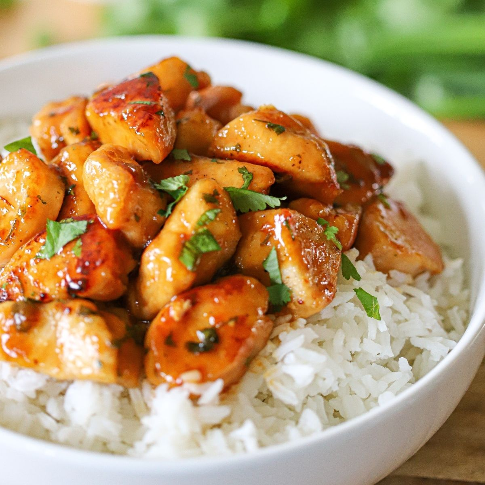

Honey Butter Chicken
Home

Description
This honey butter chicken is a delicious combination of crispy,
golden-baked chicken coated in a rich, garlicky, and slightly sweet
soy-based butter sauce. Served over fragrant jasmine rice, this dish is
perfect for a comforting meal or meal prep.
Ingredients
For the Chicken
- 1.2 kg (2.6 lbs) Chicken Breast, Diced
- 72 ml (⅓ cup) Low-Sodium Soy Sauce
- 7 Garlic Cloves, Grated
- 12 g (0.4 oz) Fresh Ginger, Grated
- Salt & Ground White Pepper, to Taste
- 120 g (4.2 oz) Cornstarch
- Cooking Oil or Spray Oil
For the Sauce
- 34 g (2½ Tbsp) Unsalted Butter
- 5 Garlic Cloves, Grated
- 96 ml (⅖ cup) Low-Sodium Soy Sauce
- 72 ml (⅓ cup) Chicken Broth
- 1.2 g (⅔ tsp) Dried Chili Flakes (Optional)
- 5 g (2 tsp) Cornstarch
- 18 ml (3½ tsp) Cold Water
- 36 g (1¾ Tbsp) Honey
- Salt & Ground White Pepper, to Taste
For the Rice
- 360 g (2 cups) Jasmine Rice, Washed
- 660 ml (2¾ cups) Cold Water
- Salt, to Taste
Instructions
- Cook the Rice
- Prepare the Chicken
- Make the Sauce
- Assemble & Serve